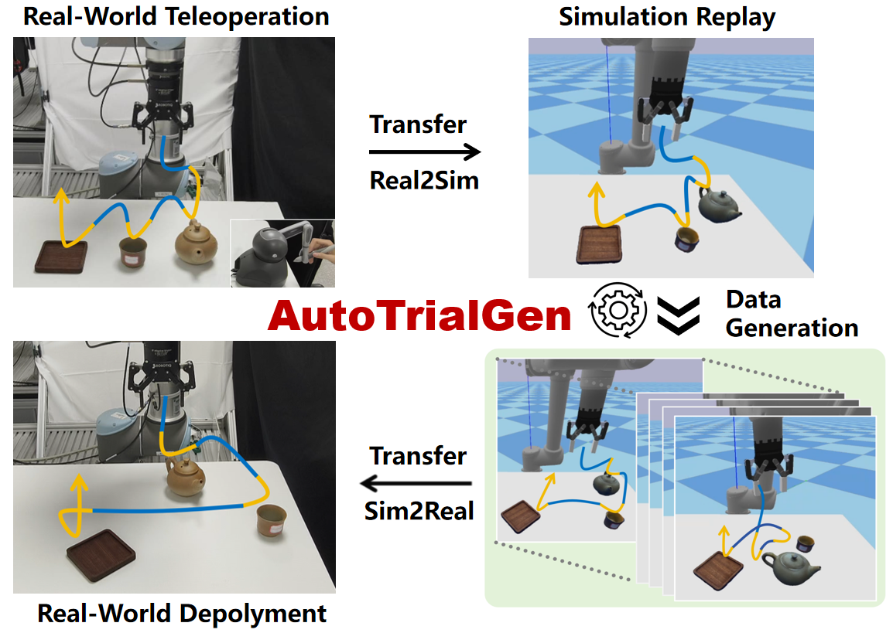
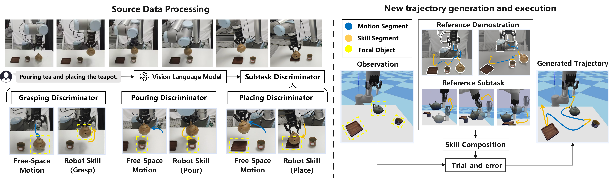
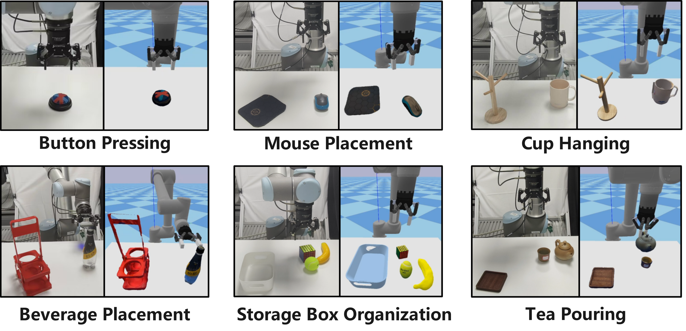
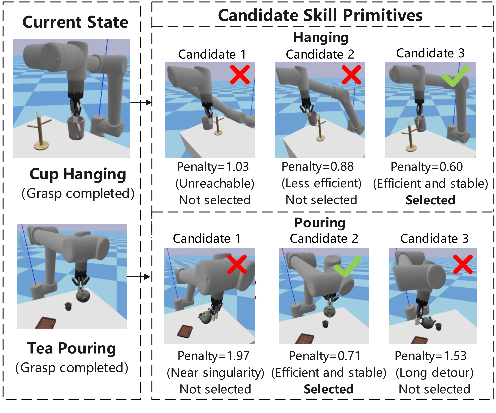
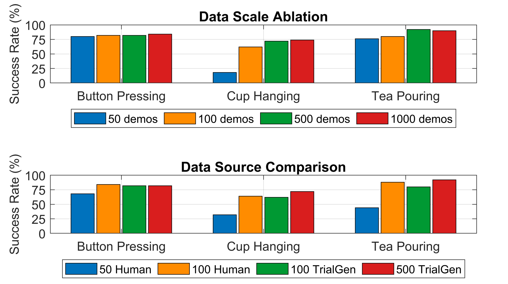
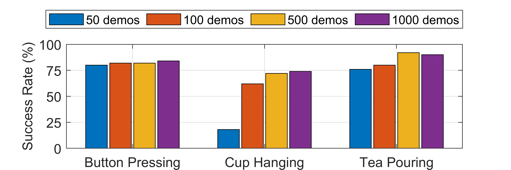

Automatic Decomposition
Vision-language models generate subtask termination discriminators and segment demonstrations into object-centric skill primitives.
Imitation learning is a powerful paradigm for teaching robots complex manipulation skills, but it is often bottlenecked by the need for large-scale, human-collected datasets. AutoTrialGen is an automated framework that generates large and diverse datasets of successful simulated demonstrations through trial-and-error from only a few human demonstrations.
The framework leverages foundation models to decompose raw human demonstrations into reusable, object-centric skill primitives, then intelligently composes these primitives in simulation using a weighted manipulability selection mechanism. Policies trained on the sim-augmented data achieve stronger data efficiency and real-world manipulation performance than existing generation pipelines.

Vision-language models generate subtask termination discriminators and segment demonstrations into object-centric skill primitives.
Digital twin scenes and reconstructed object assets enable randomized simulation trials with reusable skill trajectories.
Candidate primitives are selected by balancing kinematic manipulability and transition efficiency, reducing singular and inefficient motions.


| Task | MimicGen | AutoTrialGen |
|---|---|---|
| Button pressing | 80.0% | 90.0% |
| Mouse placement | 54.0% | 88.0% |
| Cup hanging | 62.0% | 74.0% |
| Beverage placement | 40.0% | 64.0% |
| Storage box organization | 42.0% | 68.0% |
| Tea pouring | 68.0% | 86.0% |
| Average | 57.7% | 78.3% |



@article{ma2025autotrialgen,
title = {AutoTrialGen: Automated Data Generation from Few Human Demonstrations via Trajectory Annotation and Simulation Trials},
author = {Ma, Huailiang and Song, Aiguo and He, Mutian and Yan, Yibing and Wei, Linhu},
journal = {IEEE Robotics and Automation Letters},
year = {2025}
}